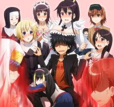

Kamijou Touma
 De: La Frikipedia, la enciclopedia extremadamente seria.
De: La Frikipedia, la enciclopedia extremadamente seria.
De la serie grandes personajes:
"Biribiri me dejo, Index se comio mi comida, falle el examen y encima tengo un articulo en la frikipedia, fukoda¡¡¡"
| Nacimiento
|
13 de diciembre +1 de 2013 (13-13-13)
|
| Muerte
|
Igual que en GTA si muere solo va al hospital
|
| Ocupación
|
golpear lolis
|
| Nacionalidad
|
Japonesa
|
| Malo o bueno
|
es un puto bastardo con suerte osea malo
|
| Atentados contra la humanidad
|
no compartir las chicas de su harem
|
| Religión
|
ninguna, el puede matar a Dios
|
| Notas
|
fukoda!
|
«!que desgracia!»
~ Kamijou Touma cuando una chica desnuda se le lanzo encima
«estupido JC Staff, no es que quiera mas Touma x Mikoto ni nada por el estilo»
~ Misaka Mikoto queriendo mas camara en la segunda temporada
«!ESE SIMIO!»
~ Shirai Kuroko al enterarse de que Biri-biri estaba tras ese idiota
Kamijou Touma, también conocido entre sus conocidos como el dios de la desgracia, chico mala suerte, puto bastardo con suerte, o la plaga kami-yan≈ es hijo no reconocido de Ichigo Kurosaki y tiene un dragón en su mano derecha que le sirve para unir a su harem a cualquier mujer a la que golpee en la cara y tambien le sirve para matar a Haruhi Suzumiya con solo tocarla.
Historia
La vida de Kamijou se puede dividir en dos partes:
-antes de perder la memoria.- una monja cayo de su techo, el pringao se la llevo dentro de su habitacion para darle los primeros auxilios y ahh…este… me olvide.
-despues de perder la memoria.-
Técnicas
Realmente solo tiene un poder pero la usa de muchas formas diferentes.
- Imagine Breaker: funciona contra magia, poderes sobrenaturales o caprichos de haruhi suzumiya, la usa para golpear a todo el mundo.
- Mano desnudadora: la misma que la anterior, cuando toca la ropa de una monja esta queda automáticamente desnuda y dispuesta para la acción.
- Puño aumenta Harem: le golpea en la cara a una chica y esta automáticamente forma parte de su harem, única excepción Misaka Mikoto, ella golpea a Touma y no al revés.
- risa psicopata: hace cagar del susto al villano de turno, funciona mejor si previamente le an arrancado el brazo derecho.
- brazo dragon: cuando le arrancan el brazo y los villanos se están cagando de miedo por la sangre y risa psicópata, le crece un dragon como brazo y se come al villano
Relaciones
Amor o sexo
- Index Librorum Prohibitorum: Esta es la primera chica en unirse al harem de Touma, por lo general es una inútil pero si le metes el “dedo” en la boca se pone a echar rayos lazer, pero como Touma tiene su mano derecha para quitarle los poderes puede meterle el dedo en la boca todo el tiempo, es peligrosa si te metes con su comida, moriras.
- Misaka Mikoto: no, jamas, ella no quiere meterse en su cama y tener sexo ardiente toda la noche ni nada por el estilo baka, ella no esta en el harem de nadie, y si vuelves a decir algo te matara con su railgun
- Misaka Sister: 10000 copias de Mikoto, puede parecer el sueño de todo hombre pero de intenta correrte mas de 10000 veces seguidas y después dime.
- Kaori Kansaki: ella es una santa digas lo que digas.
- Aisa Hinegami: Aunque en los capítulos no salga, a veces ha hecho algún que otro trío con ella y con Index.
- Oriana Thompson: es una monja pero viste como actriz porno.
y dice tener mala suerte.
no hay comida, no importa, tu eres comestible.
 notese el aura asesina de index y biribiri, adios Kamijou.
Amistad
Frikipedia 2005-2016, Licencia
GFDL 1.2 - Extraído por FrikiLeaks